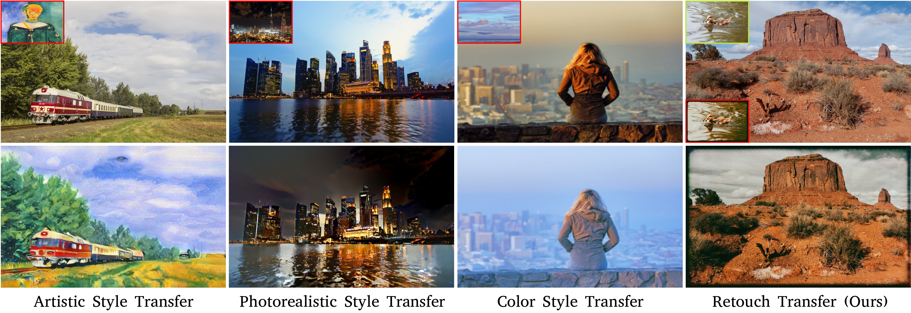

Abstract
Professional photo editing remains challenging, requiring extensive knowledge of imaging pipelines and significant expertise.
With the ubiquity of smartphone photography, there is an increasing demand for accessible yet sophisticated image editing solutions.
While recent deep learning approaches, particularly style transfer methods, have attempted to automate this process,
they often struggle with output fidelity, editing control, and complex retouching capabilities.
We propose a novel retouch transfer approach that learns from professional edits through before-after image pairs,
enabling precise replication of complex editing operations. To facilitate this research direction,
we introduce a comprehensive Photo Retouching Dataset comprising 100,000 high-quality images edited using over 170 professional Adobe Lightroom presets.
We develop a context-aware Implicit Neural Representation that learns to apply edits adaptively based on image content and context,
requiring no pretraining and capable of learning from a single example.
Our method extracts implicit transformations from reference edits and adaptively applies them to new images.
Through extensive evaluation, we demonstrate that our approach not only surpasses existing methods in photo retouching but also enhances performance
in related image reconstruction tasks like Gamut Mapping and Raw Reconstruction.
By bridging the gap between professional editing capabilities and automated solutions,
our work presents a significant step toward making sophisticated photo editing more accessible while maintaining high-fidelity results.

Comparison of different approaches for style transfer in the context of reference based image editing